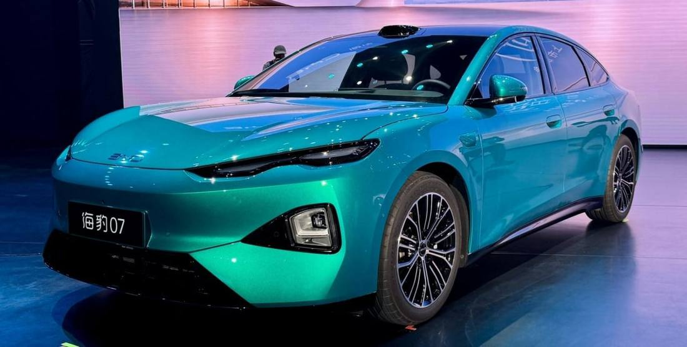
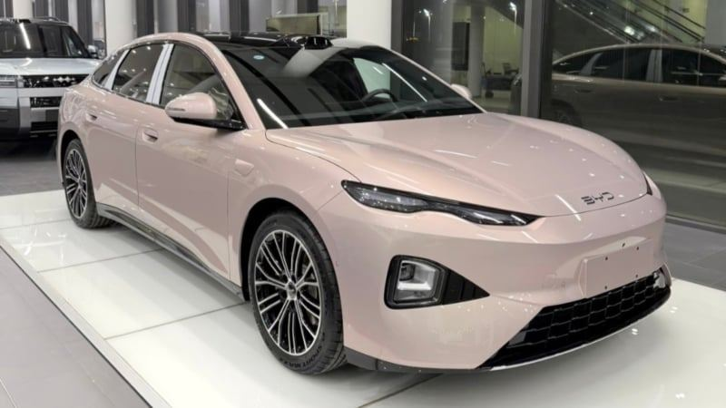
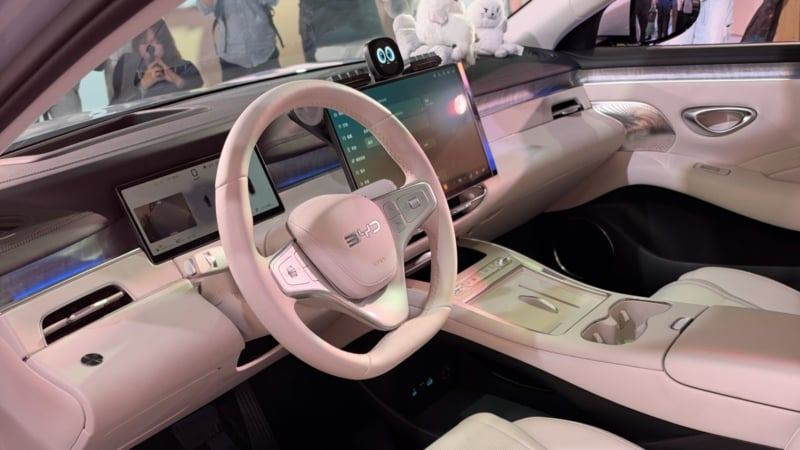

BYD · 新車 · 中國2026-11-05
第二代 BYD Seal 07：Ocean Aesthetics 2.0，車頂裝光達
Second-gen BYD Seal 07 enters China with flash charging and God’s Eye ADAS
BYD 在中國推出第二代 Seal 07，純電與插電油電雙動力，外觀改採 Ocean 系列最新的「Ocean Aesthetics 2.0」：細長日間燈、封閉式車頭、頭燈整合進前保桿，並有貫穿式尾燈與車頂光達。純電版 CLTC 續航可達 775 公里，並支援快充。
設計解析 Design Notes
- 造型語彙與旗艦 Seal 08 相近：細長 DRL、封閉車頭、頭燈下移進保桿，屬 Ocean Aesthetics 2.0。
- 比例車長 5,080mm、軸距 2,960mm，比全球版 BMW 5 系列還長 20mm，是大型轎車尺度。
- 感測器車頂前緣裝光達，對應 God’s Eye B 輔助駕駛的城市與高架 NOA。
- 色彩提供綠、粉、紫、銀、白、黑六色，延續 Ocean 系列的鮮明配色。
- 品牌方向第一代銷售疲弱後八個月就換代，用新造型與快充規格重新搶市場。